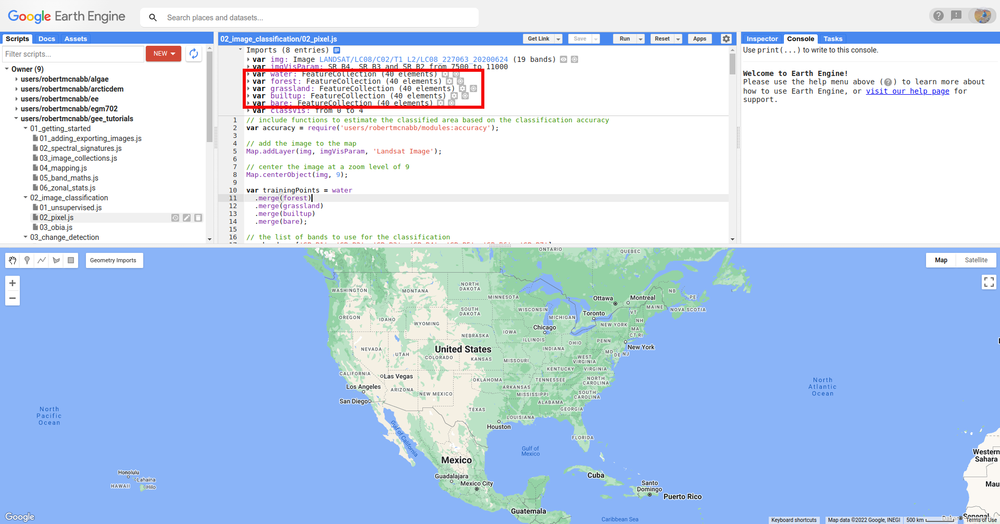
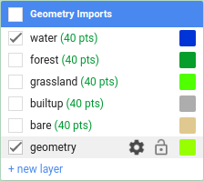
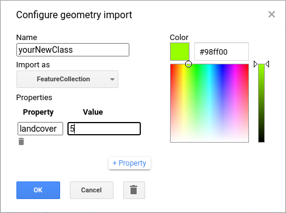
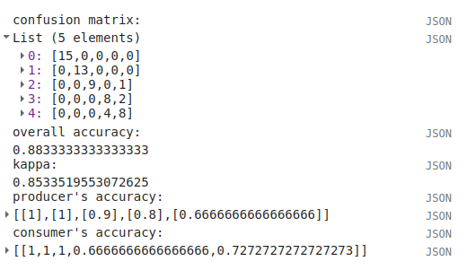
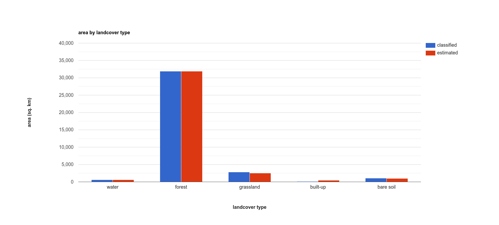
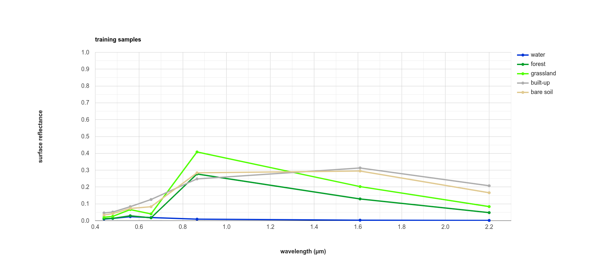

pixel-based classification#
Tip
The script for this tutorial can be found via this direct link.
Alternatively, if you have already added the repository, you can open the script from the Code Editor, by
navigating to 02_image_classification/02_pixel.js under the Reader section.
In this tutorial, we’ll look at doing a pixel-based classification of a Landsat 8 image acquired on 24 June, 2020, covering a portion of the Amazon Rainforest south of Santarém, Brazil.
Pixel-based classification is a supervised classification technique, where we first have to train the computer how to classify the image based on its characteristics, before classifying each pixel of the image.
By the end of this tutorial, you should be able to use Earth Engine to:
import functions from other scripts/libraries
select points to train a Classifier
train and apply a Classifier to a satellite image
evaluate the accuracy of a classification
create a chart that shows the area by class
plot spectral signatures of training classes
adding training points#
To run a supervised classification, we need to provide labeled training data - that is, a number of points where we have identified what class the points belong to.
The classification algorithm then takes these points, and the associated input data such as reflectance in different bands, and determines the “rules” for how to classify points based on the input data.
When you open the script, you should see there are a number of Geometry Imports:
{kind=link}
Specifically, there are five FeatureCollection imports representing landcover classes (water, forest,
grassland, builtup, and bare), each with 40 points. To add more points to each of these, you can use
the Geometry Editing tools:
{kind=link}
Click on the layer that you want to add points to - for example, water:
{kind=link}
Then, click on the map to add the point:
{kind=link}
If you want to move or delete a point, click on the Stop drawing button (the hand), then select the point you
want to edit:
{kind=link}
Then, either click on the Point and drag to move it, or click on Delete to delete the Point.
Note
For the purposes of this tutorial, 40 points for each class is sufficient to give you an idea for how the process works. To get a robust classification result and accuracy assessment, however, you will most likely need to add significantly more training points.
adding classes#
You might also want to add additional landcover classes to the classification by adding a new FeatureCollection as follows. First, mouse back over the Geometry Imports. At the bottom of the Geometry Imports menu, click on “new layer” to add a new layer, then click on the gear icon to open the configuration panel:
{kind=link}
As a reminder, when adding geometry features from the map, you can choose to import them as a Geometry, a Feature,
or a FeatureCollection:
Geometry means only vector data (no attributes/properties)
Feature means you can have a geometry and attributes/properties, it will be treated as a single feature by GEE. So, if you have multiple points in a Feature, it will be imported as a MultiPoint Feature
FeatureCollection means that each geometric object is treated as a Feature – so, multiple points are treated as individual points.
Make sure that you add the new class as a FeatureCollection, and give it an appropriate name. Next, click the +property button to add a new property:
{kind=link}
Call this property landcover (left box), and give it a value of 5 (right box), since landcover values 0-4 currently
correspond to the 5 classes that have already been imported.
Change the color to something more appropriate, then click OK. You should now see the import at the top of the script.
You can now add points to the new FeatureCollection by following the digitizing instructions from above.
Finally, you need to make sure to add your new class to the FeatureCollection of training points in the script at line 14:
var trainingPoints = water
.merge(forest)
.merge(grassland)
.merge(builtup)
.merge(bare);
To do this, delete the semicolon at the end of line 18, and add .merge(yourNewClass); on line 19 (remembering, of
course, to replace yourNewClass with the actual name of the new FeatureCollection).
You should also add the name of your class to the list of class names defined at line 24:
var classes = ee.List(['water', 'forest', 'grassland', 'built-up', 'bare soil']);
using require to load another script#
The first two lines of this script (after the initial comment) are:
var accuracy = require('users/robertmcnabb/modules:accuracy');
var tools = require('users/robertmcnabb/modules:tools');
In Earth Engine, require() (documentation) retrieves
the script/file provided to it and imports it as a module. In our script, we can then use any of the exported
functions or attributes in users/robertmcnabb/modules:accuracy or users/robertmcnabb/modules:tools by calling
them in the script.
As an example, one of the functions in users/robertmcnabb/modules:accuracy is unbiasedArea():
/*
Estimates the unbiased area estimate of each class in a classification, using the
error matrix and classified area totals.
For more information, see e.g. Eqn. 2 of Olofsson et al. (2013)
(http://dx.doi.org/10.1016/j.rse.2012.10.031).
Inputs:
- errMat: an error matrix in the form of an Array (e.g., ee.ConfusionMatrix.array())
- mapArea: a List of the mapped (classified) area corresponding to the classes in errMat.
Returns:
- areaEstim: the classified area values, corrected using the error matrix.
*/
Later in the script, we will use this function as accuracy.unbiasedArea():
// get the (unbiased) area of each class:
var unbiasedArea = accuracy.unbiasedArea(cm.array(), areas).toList();
The accuracy module includes a number of functions that implement equations from Oloffsson et al. (2013)1, to
provide a convenient way to estimate the area uncertainty of our classification using the classification
error (confusion) matrix.
We will make more use of require() in future tutorials; if you’re interested in seeing how to set this up to use it
in your own scripts,
this blog post
is a great place to start.
getting training data#
Now that we have training classes and points, we have to decide what image properties to use as inputs for “training” the classifier. In the script as written, we use Landsat OLI bands 1-7 (Visible/NIR/SWIR), as shown in line 21:
var bands = ['SR_B1', 'SR_B2', 'SR_B3', 'SR_B4', 'SR_B5', 'SR_B6', 'SR_B7'];
In principle, we can use anything that we want here. For example, if we wanted to use the normalized difference
vegetation index (NDVI) values in addition to the surface reflectances, we could add that band to the image and include
‘NDVI’ in the list of bands above:
var bands = ['SR_B1', 'SR_B2', 'SR_B3', 'SR_B4', 'SR_B5', 'SR_B6', 'SR_B7', 'NDVI'];
img = img.addBands(img.normalizedDifference(['SR_B5', 'SR_B4']).rename('NDVI'));
In the next lesson (object-based classification), we’ll see how we can include a number of image textural properties in our classification; for now, we’ll stick to the surface reflectance in OLI bands 1-7.
To create the training dataset, we use the merged training class points (trainingPoints), along with ee.Image.sampleRegions()
(documentation), to get the Image values at those
points:
var training = img.select(bands).sampleRegions({
collection: trainingPoints,
properties: ['landcover'],
scale: 30
});
This will select each of the bands in bands, then extract the values at each of the points in the trainingPoints
FeatureCollection. To make sure that we include the landcover value for each point, we add this to the
properties parameter when we call ee.Image.sampleRegions() - otherwise, this information wouldn’t be included
in the training dataset.
splitting the training data#
The next step in training a Classifier is to split the training dataset into two parts: one, the training split, is what we’ll use to actually train the Classifier. The second part, the testing split, is what we’ll use to check how good a job the Classifier has actually done.
The goal here is to test the performance of the classifier with “unseen” data (the testing split). This way, we’re evaluating the performance of the Classifier on “new” data, rather than checking its performance on data that it used to “learn” how to classify the data - in the same way that exams normally have different questions than what you’ve used to study for the exam.
To split our dataset, we first use ee.FeatureCollection.randomColumn()
(documentation). This will
add a column, 'random', to the FeatureCollection, and fill the column with uniformly-distributed random
numbers that fall in the range [0, 1) (that is, values greater than or equal to 0, but less than 1).
We then use ee.FeatureCollection.filter() to select the Features where the random value is less than 0.7,
which form our training data, and the Features where the random value is greater than or equal to 0.7,
which form our testing data:
var split = 0.7;
var withRandom = training.randomColumn('random');
var trainingPartition = withRandom.filter(ee.Filter.lt('random', split));
var testingPartition = withRandom.filter(ee.Filter.gte('random', split));
training a classifier#
Once we’ve split the input data into training and testing partitions, we can “train” our Classifier.
GEE has a number of Classifier algorithms implemented:
Maximum Entropy (
amnhMaxent; documentation)23Support Vector Machine (
libsvm; documentation)4Minimum Distance (
minimumDistance; documentation)5CART (
smileCart; documentation)6Gradient Tree Boost (
smileGradientTreeBoost; documentation)7Naive Bayes (
smileNaiveBayes; documentation)8Random Forest (
smileRandomForest; documentation)9
In this tutorial, we’re using ee.Classifier.smileRandomForest() to do a Random Forest classification:
var classifier = ee.Classifier.smileRandomForest(100).train({
features: trainingPartition,
classProperty: 'landcover',
inputProperties: bands
});
this will initialize a Random Forest Classifier with 100 trees, then use ee.Classifier.train()
(documentation) to train
the classifier. The inputs to ee.Classifier.train() used above are:
features, the FeatureCollection to use to train the ClassifierclassProperty, the property offeaturesthat contains the classification informationinputProperties, a list of the properties fromfeaturesto use to train the Classifier
So, this will train the Classifier using the trainingPartition FeatureCollection,
based on the 'landcover' property, using the image bands listed in the bands variable defined at line 21 of
the script.
classifying the image#
Once we have trained the Classifier, we use ee.Image.classify()
(documentation) to classify the
image:
var classified = img.select(bands).classify(classifier);
This creates a new Image with a single band, classification, where the pixel values are the landcover values
of each class from our training FeatureCollection.
Have a look at the classified image in the Map window - are there areas where you can see some misclassification? Does it overall match with your expectations? In the next few sections, we’ll take a look at some ways that we can evaluate how well the Classifier has done in classifying each pixel of the image.
accuracy assessment#
Once we’ve trained the Classifier and applied it to the image, we can use the testing dataset to evaluate how
well the Classifier has performed. First, though, we have to use ee.FeatureCollection.classify()
(documentation) to classify
the testing data:
var test = testingPartition.classify(classifier);
Next, we can create a “confusion matrix” to display how many of the training objects were correctly or incorrectly classified as each object:
var cm = test.errorMatrix('landcover', 'classification');
This uses ee.FeatureCollection.errorMatrix()
(documentation) to create a
ConfusionMatrix object (documentation).
The following line:
print('confusion matrix: ', cm,
'overall accuracy: ', cm.accuracy(),
'kappa: ', cm.kappa(),
"producer's accuracy:", cm.producersAccuracy(),
"consumer's accuracy:", cm.consumersAccuracy());
will print the ConfusionMatrix object, along with the overall accuracy, kappa score, producer’s accuracy, and consumer’s accuracy to the Console. As a reminder:
the overall accuracy is the number of correctly classified Features, divided by the total number of Features. It tells us the percentage of training data that the classifier has correctly identified.
the producer’s accuracy is the probability that a particular class is correctly classified, and it is calculated as the number of correctly classified Features divided by the total number of Features in each row of the ConfusionMatrix. This is also the complement of the omission error, the error introduced when pixels are incorrectly omitted from the correct class in the classification.
the consumer’s accuracy is the probability that the map classification is correct, and it’s the number of correctly classified Features divided by the total number of Features in each column of the ConfusionMatrix. This is also the complement of the commission error, the error introduced when pixels are included in the incorrect class in the classification.
Note
The documentation for ee.ConfusionMatrix.producersAccuracy() and ee.ConfusionMatrix.consumersAccuracy()
appears to be incorrect - that is, based on the example code provided, ee.ConfusionMatrix.producersAccuracy()
uses the values in each row of the sample Array, while ee.ConfusionMatrix.consumersAccuracy() uses the
values in each column.
The kappa score, or statistic10, is calculated as follows:
where \(p_o\) is the observed accuracy of the classifier, and \(p_e\) is the hypothetical probability of chance agreement. The kappa score thus gives a measure of how much better the classifier performs than would be expected by random chance.
When you run the script, you should see the following in the console panels (remember that your results may differ slightly):
{kind=link}
To help make this a bit clearer, I’ve added row/column labels to this table below:
water |
forest |
grassland |
built-up |
bare soil |
|
|---|---|---|---|---|---|
water |
15 |
0 |
0 |
0 |
0 |
forest |
0 |
13 |
0 |
0 |
0 |
grassland |
0 |
0 |
9 |
0 |
1 |
built-up |
0 |
0 |
0 |
8 |
2 |
bare soil |
0 |
0 |
0 |
4 |
8 |
The “rows” of this matrix correspond to the landcover class that we have identified, while the columns correspond to the classified values. In the example above, we see that 15 of our training samples were classified as landcover class 0 (water), and there were no water training samples that were classified as something else. The same is true for the forest class (value 1), while one grassland Feature (value 2) was classified as bare soil.
Of the 10 built-up Features in our testing dataset, 8 were correctly classified, while 2 were mis-classified as bare soil.
Four bare soil Features were mis-classified as built-up areas, and the remaining 8 were correctly classified as bare soil.
From this example, we can also see that the overall accuracy is decently high (88.3%), with a reasonably high kappa statistic (0.853). This, however, is not the complete picture of the accuracy of the Classifier (or the classified image).
The producer’s accuracy is similarly high for each class except for bare soil, where 4 of the 12 test Features were misclassified.
class |
producer’s accuracy |
consumer’s accuracy |
|---|---|---|
water |
15/15 = 100% |
15/15 = 100% |
forest |
13/13 = 100% |
13/13 = 100% |
grassland |
9/10 = 90% |
9/9 = 100% |
built-up |
8/10 = 80% |
8/12 = 66.7% |
bare soil |
8/12 = 66.7% |
8/11 = 72.7% |
While these are encouraging results, it’s worth keeping in mind that we’re working with only a few (\(n \leq\) 15) samples for each class. With small sample sizes like this, our results are less likely to be an accurate reflection of the accuracy of the classified image.11
landcover area by class#
To get the total area for each class in the classified image, we start by using
ee.Image.pixelArea() (documentation)
to get an image where the value of each pixel is the pixel area in square meters:
var reduced = ee.Image.pixelArea()
next, we add the classified image as a band to this image:
.addBands(classified)
before finally using ee.Image.reduceRegion() (documentation)
to get the total area for each class:
.reduceRegion({
reducer: ee.Reducer.sum().group({
groupField: 1,
groupName: 'classification'
}),
geometry: classified.geometry(),
maxPixels: 1e13,
bestEffort: true,
scale: 30
});
The Reducer that we’re using is ee.Reducer.sum(), and we use
ee.Reducer.group() (documentation) to
apply the Reducer to each class.
Here, the groupField is 1, because that’s the band number of the classification band in our Image;
groupName is the Dictionary key in the output object that contains the group value.
The output is a Dictionary with a single key, groups, which is a List of Dictionary objects for each
class. Each of those Dictionary objects has two keys, classification and sum, corresponding to the class
number and area, respectively.
This is kind of confusing/unwieldy, so we’ll extract the area values to a single List:
var areas = ee.List(reduced.get('groups')).map(function(obj){
return ee.List(ee.Dictionary(obj).get('sum'));
});
Finally, we want to see the classified areas in square kilometers, rather than square meters, so we divide each value by 106:
areas = ee.Array(areas).divide(1e6).toList();
To do this, we cast areas as an Array object so that we can use ee.Array.divide()
(documentation), before using
ee.Array.toList()
(documentation) to convert the values back
to a List.
Next, so that we know which landcover class belongs to each area, we can use ee.Dictionary.fromLists()
(documentation) to create a
Dictionary where the landcover class names are the keys, and the classified areas are the values:
var areaDict = ee.Dictionary.fromLists(classes, areas);
The end result is this (note that when we print() the Dictionary, the keys are ordered alphabetically):
class |
area (km2) |
|---|---|
water |
616.73 |
forest |
31922.39 |
grassland |
2795.47 |
built-up |
99.37 |
bare soil |
1091.41 |
unbiased area estimates and area uncertainty#
The next part of the script is where we make use of the require() statement discussed earlier. Perhaps just as
important as the area of each landcover class is the uncertainty of that classified area. Because of the errors of
omission and commission (the complements of the producer’s and consumer’s accuracy discussed above), the area counts
in the table above are biased - that is, they are skewed because they exclude (or include) areas that should be
included (excluded) in the estimated area for each class.
Based on the work presented by Olofsson et al. 20131, we can use the error matrix that we produced as part of the Classifier training process to produce an unbiased estimate of the landcover area for each class, as well as the 95% confidence interval (CI) around that estimate.12
I won’t go through the equations or the code in detail here, but the functions unbiasedArea() and
standardError() included in users/robertmcnabb/modules:accuracy calculate the unbiased area estimate
and standard error for each class, given the error matrix and total areas classified for each landcover class:
// get the (unbiased) area of each class:
var unbiasedArea = accuracy.unbiasedArea(cm.array(), areas).toList();
// get the standard error of each area estimate:
var standardError = accuracy.standardError(cm.array(), areas).toList();
Here, the output of each function is an Array object; as we did above for the classified area counts, we
use ee.Array.toList() to convert the object to a List.
To help compare the two area estimates, we can also use the errorDict() function from accuracy:
// dictionary of the area estimates (± 95% CI)
var errorDict = accuracy.errorDict(classes, unbiasedArea, standardError);
When we print this Dictionary to the Console, we see the following (here combined in a single table for ease of comparison)13:
class |
classified area (km2) |
estimated area ± 95% CI (km2) |
|---|---|---|
water |
616.73 |
616.73 ± 0.00 |
forest |
31922.39 |
31922.39 ± 0.00 |
grassland |
2795.47 |
2515.93 ± 559.09 |
built-up |
99.37 |
443.30 ± 311.38 |
bare soil |
1091.41 |
1027.03 ± 639.96 |
In this table, we can see a number of things. First, because of the “perfect” accuracy of the water and forest classes, we have a standard error of zero km2 for these classes, and the classified area and estimated area are the same for both classes.
Because the grassland class had high producer’s and consumer’s accuracy (and therefore low errors of omission/commission), we see that the estimated areas are close, and overlap within the 95% confidence interval.
For the built-up class, we see that the estimated area is far higher than the classified area, and in fact does not fall within the 95% confidence interval. This reflects the large errors of omission and commission for this class, as shown by the error matrix above.
The estimated area of the bare soil class largely agrees with the classified area, though with a much higher confidence interval - again, reflecting the low producer’s and consumer’s accuracy for this class.
Finally, to provide a visual comparison of the two different area estimates in the table above, the script
produces a bar chart by first combining the area and unbiasedArea List objects
into a single array using ee.Array.cat()
(documentation), then using ui.Chart.array.values()
(documentation) to create the chart:
// make an array with the original and estimated classified areas
var combArea = ee.Array.cat([areas, unbiasedArea], 1);
// plot a chart of area by class
var area_chart = ui.Chart.array.values({
array: combArea,
axis: 0,
xLabels: classes
})
.setSeriesNames(['classified', 'estimated'])
.setChartType('ColumnChart')
.setOptions({
title: 'area by landcover type',
hAxis: {
title: 'landcover type',
titleTextStyle: {italic: false, bold: true},
},
vAxis: {
title: 'area (sq. km)',
titleTextStyle: {italic: false, bold: true},
viewWindow: {min: 0, max: 4e4}
},
});
With the following printed to the Console:
{kind=link}
spectral signatures#
When we have two classes where we have significant mis-classification between the two classes, such as bare soil and built-up areas, we might think about whether it makes sense to have them as separate classes. We can also try adding carefully-chosen training samples that help increase the spectral differences between the two classes.
Lines 137-168 of the script define a function, spectralPlot(), that plots the average spectral signature of each of
our classes, given a list of reflectance values and a plot title.
Note
If you have added an additional class, you’ll need to update this Dictionary:
series: {
0: {lineWidth: 4, color: '0134d6'},
1: {lineWidth: 4, color: '059e2a'},
2: {lineWidth: 4, color: '50ff00'},
3: {lineWidth: 4, color: 'adadad'},
4: {lineWidth: 4, color: 'e0c990'},
}
to include a line for the new class. For example, if your class marker color is ‘000000’ (black), you should update it to look like this:
series: {
0: {lineWidth: 4, color: '0134d6'},
1: {lineWidth: 4, color: '059e2a'},
2: {lineWidth: 4, color: '50ff00'},
3: {lineWidth: 4, color: 'adadad'},
4: {lineWidth: 4, color: 'e0c990'},
5: {lineWidth: 4, color: '000000'},
}
Lines 171-189 sample the surface reflectance values at each of the training points, gets the median value in each band for each class, and plots the median spectral signature for each class:
{kind=link}
Using this plot, we can see that the bare soil and built-up classes have similar spectral signatures. There are
some differences, though - for example, the bare soil reflectance is mostly flat between the NIR and SWIR1 bands, while
there is a slightly larger increase for the built-up class. We could include a normalized difference of the
NIR and SWIR1 bands in our classification, to see if that reduces some of the mis-classification.
The final part of the script uses ee.Image.stratifiedSample()
(documentation) to extract a random
sample of points from each class:
var sample = reflimg.select(['classification', 'SR_B.']).stratifiedSample({
numPoints: 300,
classBand: 'classification',
region: reflimg.geometry(),
scale: 30,
projection: reflimg.projection()
});
This selects a sample of 300 points (numPoints) from each class contained in the classification band (classBand),
using the region, scale, and projection as defined above. With this set of points, we take the median
for each band for each class, and plot the results again:
{kind=link}
While the general pattern of these two signature plots are similar, there are some noticeable differences. For the training samples, we see that at longer wavelengths, the built-up and bare soil classes are very similar; in the random sample, they are more separated. This suggests that we might want to add more varied training samples for both classes, to help increase some of this separation.
next steps#
In this tutorial, we’ve seen how we can use GEE to classify a satellite image. We’ve also seen how we can assess the accuracy of that classification, produce estimates of the area of each landcover class, and examine the spectral signatures of our training data to look at ways to improve the classification.
If you are looking for more practice with pixel-based image classification, or interested in experimenting with ways to improve the classification here, try the following suggestions:
how does changing the number of ‘trees’ in the random forest classifier impact the estimated accuracy of the classification?
do different classifiers (e.g., maximum entropy) make a difference in the classification? Note that for some classifiers, like SVM, there may be additional processing steps such as normalization required before you can run the classifier.
how does adding additional bands such as the NDVI affect the classification?
there are some clouds (and cloud shadow) in the image, which cause mis-classification. Can you think of some ways that you could address this?
references and notes#
- 1(1,2)
Olofsson, P., et al. (2013). Rem. Sens. Env. 129, 122–131. doi: 10.1016/j.rse.2012.10.031
- 2
This particular implementation is the American Museum of Natural History (AMNH) maximum-entropy classifier; for more information about the software, see https://biodiversityinformatics.amnh.org/open_source/maxent/
- 3
e.g., De Martino, A. and D. De Martino (2018). Heliyon, 4(4), e00596. doi: 10.1016/j.heliyon.2018.e00596
- 4
e.g., Mountrakis, G., et al. (2011). ISPRS J. Photogramm. Rem. Sens. 66, 247–259. doi: 10.1016/j.isprsjprs.2010.11.001
- 5
e.g., Wacker, A. G. and D. A. Landgrebe (1972). LARS Technical Reports. Paper 25. [PDF]
- 6
e.g., Loh, W.-Y. (2011). WIREs Data Mining Knowl. Discov. 1(1), 14-23. doi: 10.1002/widm.8
- 7
e.g., Friedman, J. H. (2001). Ann. Statist. 29(5), 1189-1232. doi: 10.1214/aos/1013203451
- 8
e.g., Hand, D. J. and K. Yu (2001). Int. Statistical Rev. 69(3), 385-398. doi: 10.2307/1403452
- 9
e.g., Belgiu, M. and L. Drăguţ (2016). ISPRS J. Photogramm. Rem. Sens. 114, 24-31. doi: 10.1016/j.isprsjprs.2016.01.011
- 10
sometimes also referred to as Cohen’s kappa
- 11
e.g., Congalton, R. G. (1988). Photogrammetric Eng. Rem. Sens. 58(5), 593-600. [PDF]
- 12
the 95% confidence interval is obtained using twice the standard error.
- 13
Note that in this example, because the classification has worked “perfectly” for two classes, water and forest, the standard error for each class is 0. This is not real, as you can tell by looking at the cloud shadows that have been classified as “water”. Rather than using the testing split, we could instead select a number of random points from each landcover class in the classified image, and compare the computer-classified values with human-classified values. This is more difficult to do within GEE, but it would provide a more robust estimate of the accuracy of the classification.